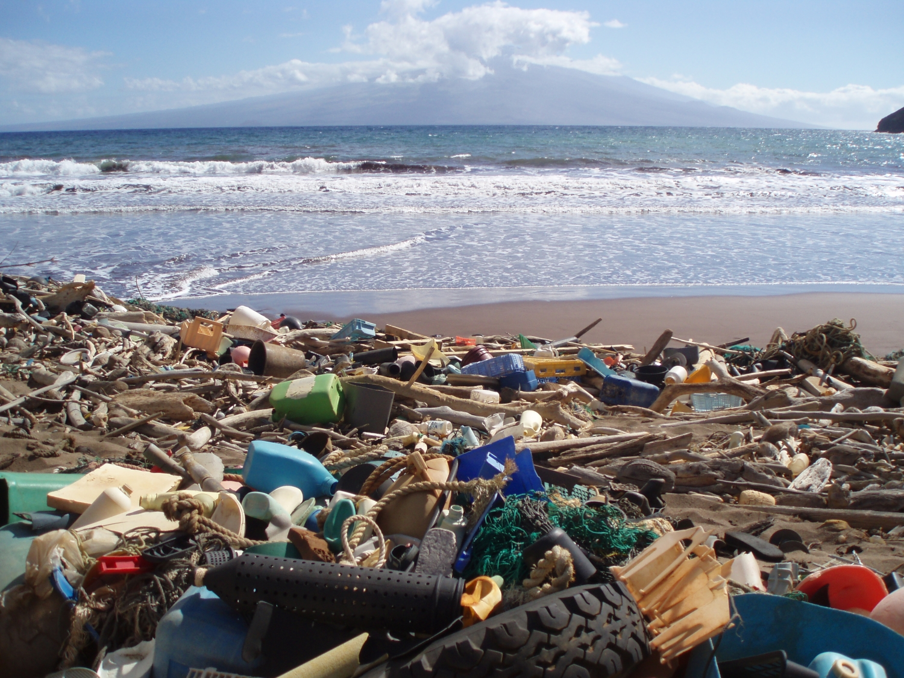

2,000truckloads / day
The daily equivalent of plastic entering oceans, rivers, and lakes.
Source →
Living Atlas · Field guide 01
A field guide for reading the connected systems that shape our climate, waters, landscapes, and futures.
49.2° N / 123.1° W
Start with what the landscape is telling us.
Observation / 01
Plastic, a changing climate, and biodiversity loss are not separate stories. They move through the same systems: the water we drink, the air we share, and the habitats that make life possible.
The daily equivalent of plastic entering oceans, rivers, and lakes.
Source →A global shift driven largely by human activities and carbon dioxide emissions.
Source →Plants and animals currently threatened with extinction, many within decades.
Source →Field notes / 02
Follow three visible signals across the atlas. Each is connected to an evidence page, a reference path, and people working on a response.

Pollution moves through a planetary circulation system.
Read the field note
Evidence is visible across land, ocean, ice, and atmosphere.
Read the field note
Every ecosystem is part of a larger, shared web.
Read the field noteA note on attention
Information only becomes useful when it helps us notice the relationship between an event, a place, and a choice. This atlas keeps those links in view.
Explore pressure systemsResponse network / 03
Discover the research institutions, public agencies, and community organizations that transform environmental knowledge into action.
Next observation
Trace the sources, understand the systems, and choose a response worth supporting.
Visit the research desk